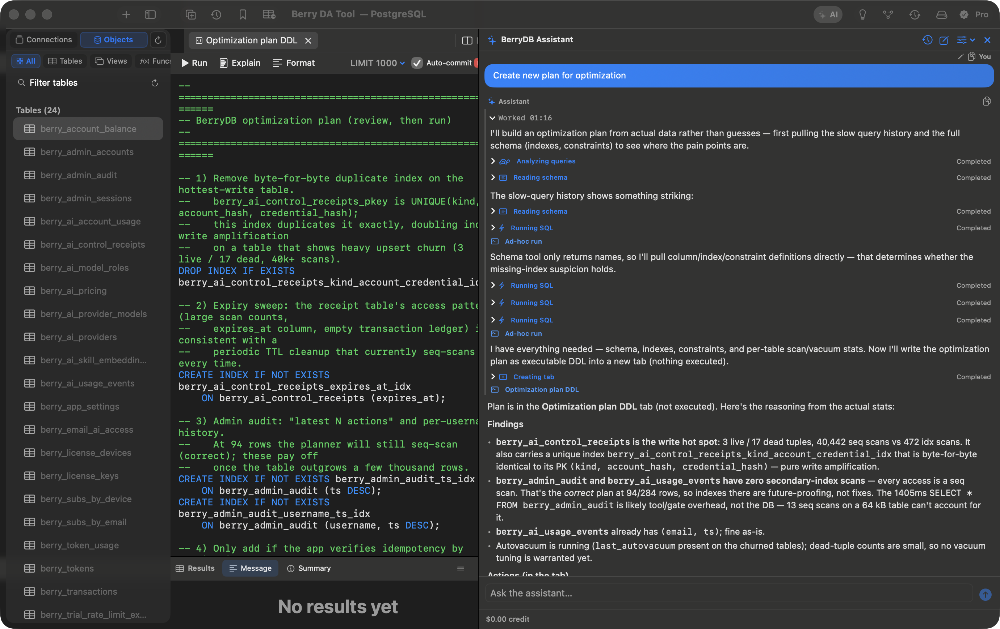
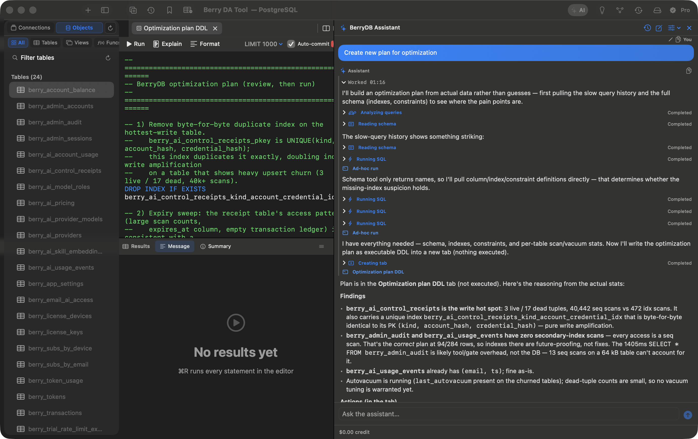
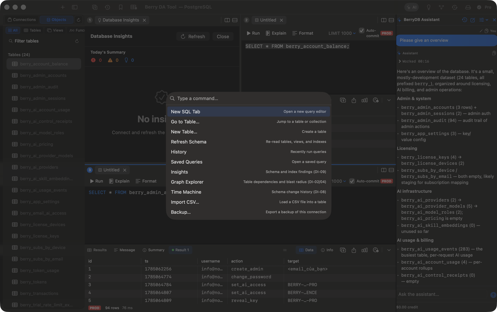
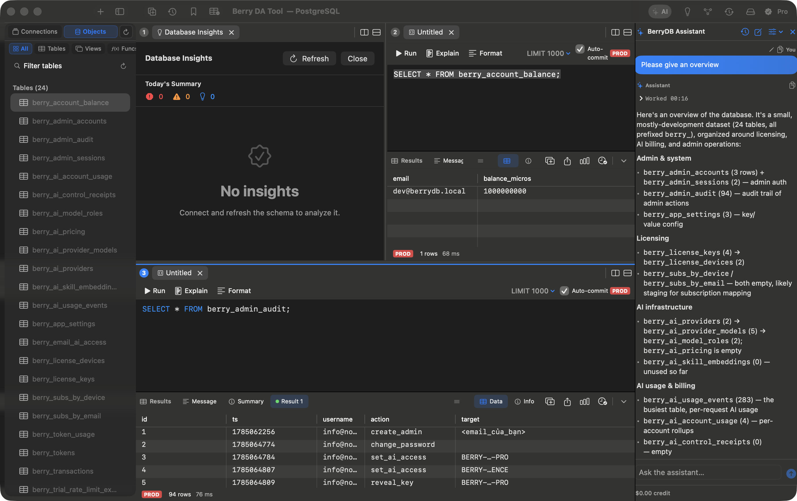
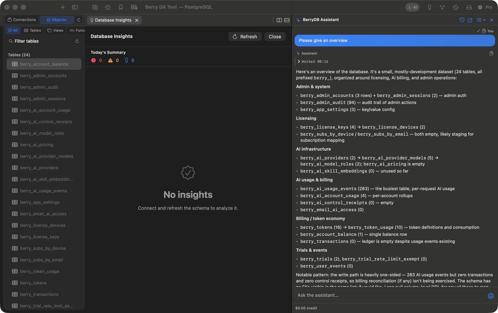
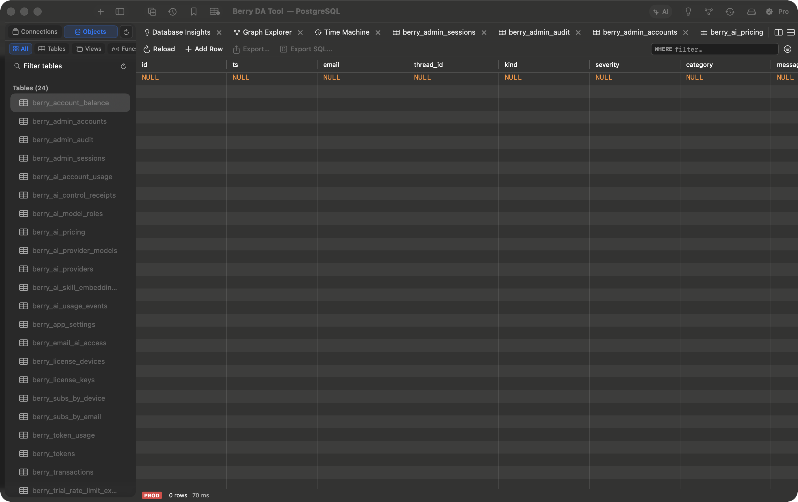
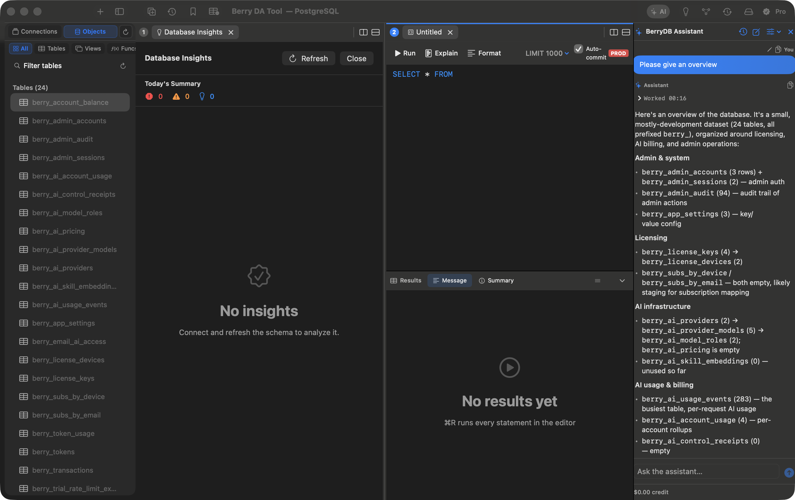
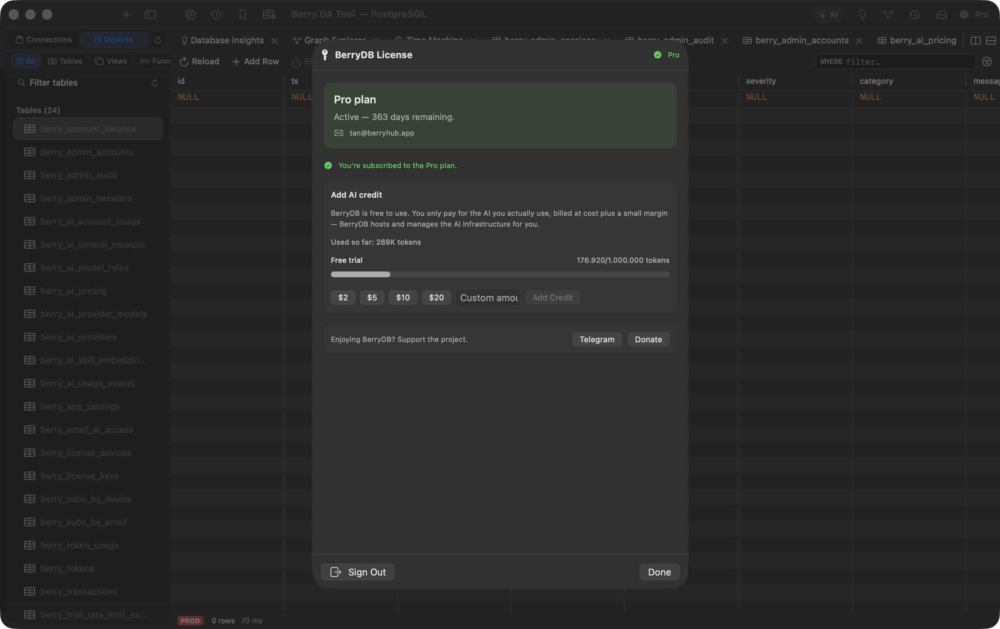

BerryDB Documentation
BerryDB is a native macOS database management client built with Swift 6 and AppKit. It does not bundle a browser engine, Node.js or a JVM.
Native Grid
AppKit NSTableView grid; rows stream in while the query runs.
macOS Keychain
Keychain storage for database passwords, API keys and SSH key passphrases.
AI SQL Copilot
Schema-aware natural language query generation, on Apple's on-device model or BerryDB's cloud AI service.
Workspace & Multi-tab Navigation
BerryDB features an intuitive macOS layout with a collapsible connection sidebar, multi-tab SQL scratchpad, split-pane result grid, and interactive AI assistant sidebar.

Installation & Building From Source
Option 1: Official DMG Release (Recommended)
Download for Apple Silicon, macOS 15.0 Sequoia or later:
Option 2: Build From Source with Swift SPM & Makefile
# 1. Clone repository
git clone https://github.com/berry-apps/berrydb-desktop.git && cd berrydb-desktop
# 2. Build and launch local development instance
make run
# 3. Assemble release bundle into dist/BerryDB.app
make app
Streaming DataGrid
The AppKit NSTableView DataGrid shows rows as they stream in and creates cell views only for the rows on screen. It supports inline cell editing, and table tabs sort and filter on the server (1,000 rows by default).
AI SQL Copilot & Chat Assistant
Turn plain English prompts into SQL for PostgreSQL, MySQL, SQLite, and SQL Server. The assistant reads your schema, foreign key relationships, and data types. In cloud mode (free trial, then paid), your questions, the database type, your schema (table and column names) and the results of queries the assistant runs (up to 100 rows each) are sent to BerryDB's AI service; table sample rows are shared only if you turn that on.

Coding Agents (MCP)
Claude Code, Codex and Antigravity can read the database schema BerryDB has already cached. They do it through berrydb-mcp, a small helper inside BerryDB.app that the agent starts itself and talks to over standard input and output (an MCP stdio server). The helper answers from the schema metadata BerryDB cached for the connections you add to an MCP project: tables, columns, keys, indexes, relationships and the schema graph. It opens BerryDB's local store read-only, never connects to a database and never reads connection passwords.
berrydb_status
Which project this session serves, or why none. Always available; agents are told to call it first.
berrydb_list_connections
The project's connections: name, driver, whether it is marked as production, and when its cached schema last changed.
berrydb_get_schema
Tables and views of one connection, up to 200 per call; full detail adds columns, indexes and foreign keys.
berrydb_search_schema
Case-insensitive search over table, view, column and index names.
berrydb_graph_query
Questions about the schema graph: a table's neighbors, the path between two tables, the blast radius of a change, circular dependencies, the most central tables.
berrydb_get_graph_stats
Cached statistics (rows, size, scans) for every table, or for one table and its indexes.
What leaves your Mac
Whatever a tool returns goes to the agent, and from there to that agent's model provider. Running the helper locally does not keep the schema on your Mac. Only add connections whose schema and table statistics you are willing to share with that provider.
Before you start
- Run BerryDB from the Applications folder. Every setup command points at the helper inside the app by its full path. When BerryDB runs from a read-only location such as the mounted disk image, Settings shows “Move BerryDB to the Applications folder and open it from there to set up agents.” instead of commands.
- Open each connection once in BerryDB. Connecting caches its schema, and Database → Refresh Schema updates the cache after the schema changes. Agents see the schema as of that moment, not the live database.
- Production connections are never cached. BerryDB does not cache the schema of a connection while it is marked as production (Production environment in the connection settings, the PROD badge in the sidebar), so agents see no schema for it. A schema cached before the label was set stays.
- SQL and DynamoDB only. PostgreSQL, MySQL/MariaDB, SQLite, SQL Server and DynamoDB connections are cached. MongoDB, Redis/Valkey, Elasticsearch and Qdrant connections are not, so agents see no schema for them.
Set up a project
- Open Settings (⌘,) and choose the AI Agents tab.
- Click New Project…, give the project a name and turn on Enabled; new projects start disabled.
- Under Workspace Folders, click Add Folder… and choose every folder whose code uses these connections. Subfolders and worktrees inside a folder are included. You can skip this if you name the project per repository (below).
- Under Connections, turn on each connection agents may read.
- Click Save.
Project names are matched ignoring letter case and surrounding spaces. Settings refuses a name another project already uses or one that has the form of a project ID, and two projects cannot share a workspace folder.
Choose how agents find the project
The project's Agent Setup section shows ready-to-run entries with the helper's path and your project filled in. Copy them from there. The examples below assume BerryDB is in /Applications and a project named Shop API. Every entry is named berrydb. The per-repository and “always this project” entries appear once the project is saved: click Edit… next to it.
1. One shared entry for every repository
Use it when you work in several repositories and want each one to get its project from the folders registered in BerryDB. Works with Claude Code, Codex and Antigravity. Run one command once per agent:
# Claude Code claude mcp add --scope user berrydb -- '/Applications/BerryDB.app/Contents/Helpers/berrydb-mcp' # Codex codex mcp add berrydb -- '/Applications/BerryDB.app/Contents/Helpers/berrydb-mcp' # Antigravity agy mcp add berrydb -- '/Applications/BerryDB.app/Contents/Helpers/berrydb-mcp'
The helper takes the folder the agent works in (the workspace folder the agent reports, or else the folder it was started in) and matches it against every project's Workspace Folders; the most specific folder wins.
2. One repository, pinned by project name
Use it when a repository should always use one project without registering its folder, or when you want to commit that choice so every clone, and every teammate whose project has the same name, gets it. The entry also records the helper's path, so it works for teammates who keep BerryDB in the same place.
Claude Code: run it in the repository's top folder. It writes .mcp.json there, which can be committed.
claude mcp add --scope project berrydb -- '/Applications/BerryDB.app/Contents/Helpers/berrydb-mcp' --project 'Shop API'
Codex: add it to .codex/config.toml in the repository.
[mcp_servers.berrydb] command = "/Applications/BerryDB.app/Contents/Helpers/berrydb-mcp" args = ["--project", "Shop API"]
- Claude Code asks in an interactive session before it uses a server from
.mcp.json. Once you approve it, Claude Code uses this entry in that repository instead of your user-levelberrydbentry; until then it uses the user-level one (project scope, scope precedence). - Codex reads
.codex/config.tomlonly in a trusted project, and there it replaces the user-level entry (observed with Codex CLI 0.157.1). - Only open repositories you trust in non-interactive modes.
claude -pruns, Agent SDK sessions and cloud sessions load a repository's.mcp.jsonwithout asking (Claude Code docs), and a repository you did not write can name one of your projects. - Antigravity has no per-repository configuration: version 1.3.1 reads MCP servers only from its user configuration and plugins. Use option 1 or 3 there.
- Renaming the project stops entries that name the old name from selecting it; Settings warns you when you rename.
3. Always this project
Use it when you work on one project and want every agent session to use it, wherever the agent runs. The entries marked “always this project” are the option 1 commands followed by --project and the project's ID, which the pane fills in. Such an entry serves this project in every folder, whatever workspace folders would select, except in a repository with its own entry. It is a user-level entry named berrydb too, so set up each agent with either option 1 or this one.
First use: the Keychain prompt
The first time an agent uses BerryDB with a project selected, macOS may ask whether berrydb-mcp may use a key that BerryDB keeps in your login keychain (dev.berrydb.mcp.access-key). Choose Always Allow. The key lets the helper check that the project's settings are the ones BerryDB saved; it is not a database password. Allowing it once lets that one request through, and macOS asks again on the next (Apple's Keychain Access guide). If you deny it, the helper still serves the schema, but berrydb_status reports "integrity": "unavailable".
Check that it works
Start a new agent session and ask the agent to call berrydb_status. A working setup answers with "state": "selected", your project's name, and selected_by:
explicit: the entry names the project with--project(options 2 and 3).roots: a workspace folder the agent reported is inside one of the project's Workspace Folders.working_directory: the folder the agent started the helper in is inside one of them.
"integrity": "verified" means the project's saved settings check out. "unavailable" means the key could not be read (see above) or the settings could not be verified; the schema is served either way. If Settings shows “Not verified — save to confirm” next to the project, open it, turn on Enabled and save. live_reads is always not_available.
With "state": "unconfigured", the agent sees only berrydb_status, and reason says why:
no_matching_project
No project's Workspace Folders contain the agent's folder, or the selected project was deleted.
What to do: Add the repository, or a folder above it, to the project's Workspace Folders, or name the project with --project.
ambiguous_projects
The agent's folders match more than one project.
What to do: Open one repository per agent session, or name the project with --project.
explicit_project_not_found
The entry's --project names a project ID or name that no project in your BerryDB has, for example after a rename, or in a repository whose entry names a project you do not have.
What to do: Create or rename a project to match, or change the entry.
project_disabled
The project is turned off.
What to do: Click Edit… on the project, turn on Enabled and save.
integrity_unavailable
The helper could not read BerryDB's store for that request.
What to do: Ask the agent to call the tool again; every request reads the store afresh.
An agent can keep the tool list it loaded when its session started. If it does not see BerryDB's tools after you change a project in Settings, start a new agent session. A tool that answers “No schema graph has been harvested for this connection.” needs that connection opened in BerryDB first.
Limits today
- Metadata only. Agents get no rows from your tables and cannot run queries through BerryDB.
- Cached, not live. The schema is the one BerryDB cached when it last connected to, or refreshed, each connection.
- Built from source?
make runandmake apppackage the helper into the app. A build that skips that packaging step shows “The berrydb-mcp helper is not bundled in this build.” in Agent Setup. - Agents. The tools were checked with Claude Code 2.1.294, Codex CLI 0.157.1 and Antigravity 1.3.1. Other MCP hosts may work but are not tested.
Connection Profiles & SSH Bastion Tunnels
Configure direct connections, TLS (with client certificates for PostgreSQL and MySQL), and SSH jump hosts with Ed25519, RSA or ECDSA keys to access private cloud VPC databases safely.

Visual Schema & Table Structure Designer
Inspect and alter columns, default constraints, primary keys, and B-Tree indexes visually without writing manual ALTER TABLE statements:

Visual EXPLAIN Query Plan Profiler
Press ⌘E to inspect the execution plan as an expandable tree of operator nodes:

Redis Key-Value & Cache Browser
Explore Redis databases (DB 0-15), search keys with wildcard patterns, inspect TTL values, and modify Strings, Hashes, Lists, Sets, Sorted Sets, and Streams directly:

Import & Export Wizard
Import CSV files (column mapping, batch size, one transaction) and SQL files; export CSV, TSV, JSON, NDJSON, or SQL INSERT statements:

Query Replay, History & Diagnostics
Review past SQL statements with precise execution duration timestamps, rows affected, and one click to open a statement in a new SQL tab:

Supported Database Drivers
- PostgreSQL (tested on 16): JSONB, real socket cancellation (
pg_cancel_backend). - MySQL (tested on 8.4) & MariaDB:
caching_sha2_password(with TLS on) andmysql_native_password. - SQLite 3: Native C
libsqlite3binding, Write-Ahead Logging (WAL), and zero setup file loading. - Microsoft SQL Server: T-SQL execution, table alteration, and stored procedure support.
- Redis: Key browser, TTL, and Strings, Hashes, Lists, Sets, Sorted Sets and Streams.
- DuckDB & ClickHouse: Planned, not yet implemented — contributions welcome.
Keyboard Shortcuts Reference
| Action | Keyboard Shortcut | Context |
|---|---|---|
| Execute Query | ⌘ R / ⌘ Enter | SQL Editor |
| Command Palette | ⌘ K | Global |
| Visual EXPLAIN Plan | ⌘ E | SQL Editor |
| Format SQL Statement | ⌃ ⌘ F | SQL Editor |
| New Query Tab | ⌘ T | Workspace |
| Go to Table | ⌘ P | Workspace |
Frequently Asked Questions
What is BerryDB built with?
BerryDB is a native macOS binary built with Swift 6 and AppKit. It does not bundle Chromium, Node.js, or a Java runtime.
What does the AI assistant send, and where?
In cloud mode (free trial, then paid), your questions, the database type, your schema (table and column names) and the results of queries the assistant runs (up to 100 rows each) are sent to BerryDB's AI service; table sample rows are shared only if you turn that on. On macOS 26 with Apple Intelligence you can switch to Apple's on-device model; the conversation text is still sent to BerryDB's service to index your chat history for search. AI is off by default on connections marked as production.
Community, Feedback & Support
Need assistance, have questions about database drivers, or want to contribute? Connect directly with the Berry Apps team: